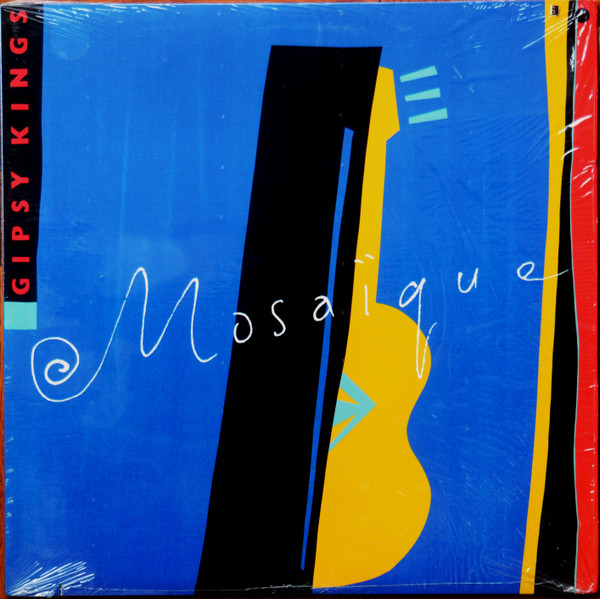

LP
Mosaïque
Gipsy Kings
Media: — · Sleeve: —
—
Personal
Discogs SuggestedCA$18.35
Discogs MedianCA$18.35
Discogs HighCA$18.35
- Physical Copy ID
- BB-LP-122
- Year
- 1989
- Label
- Trans-Canada Disq
- Catalog #
- TCD-8911
- Country
- CACanada
- Genre / Style
- Latin · Flamenco